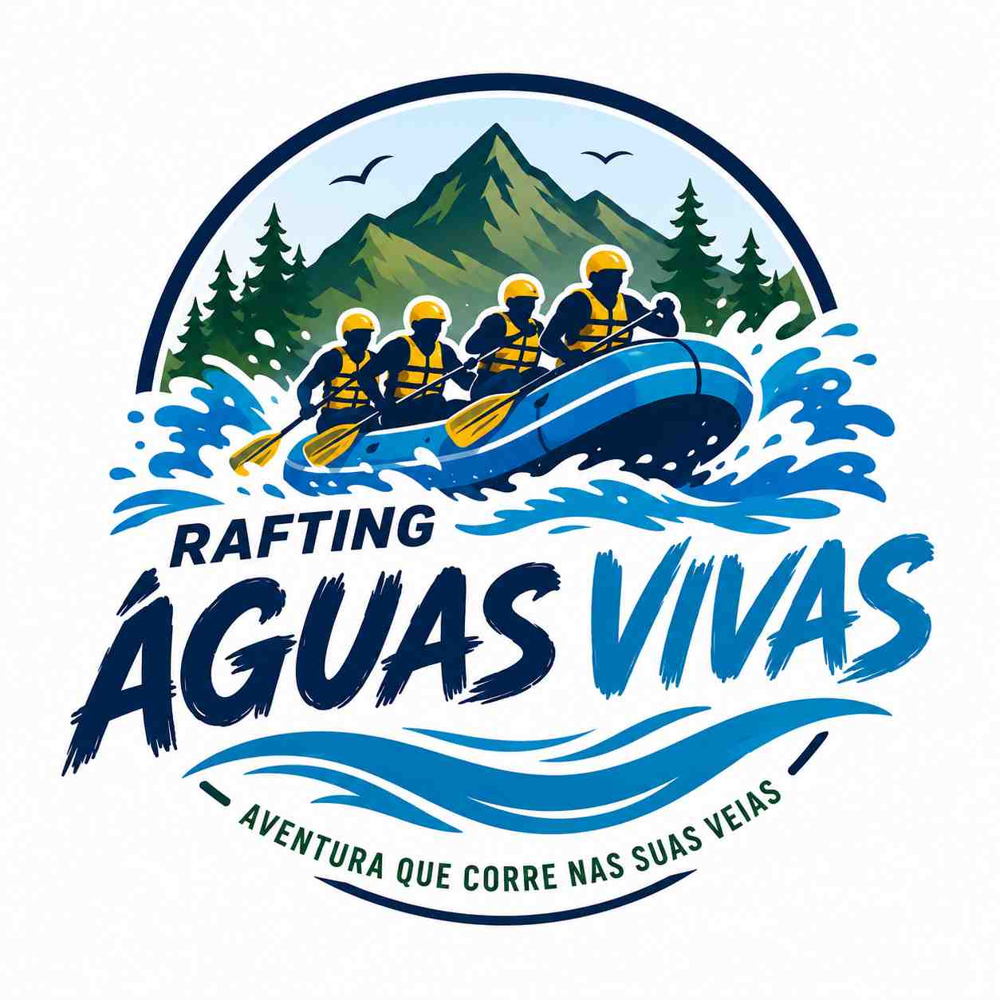
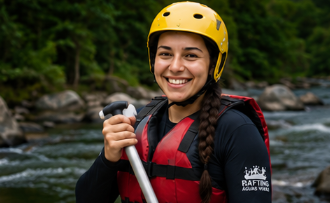
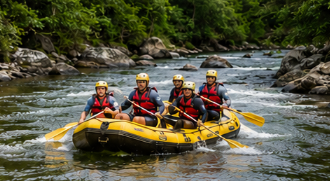
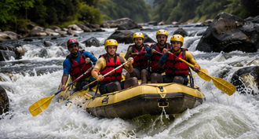
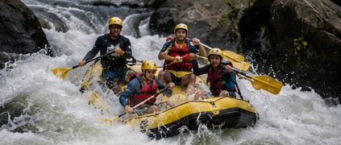

Nossa missão é proporcionar aventuras emocionantes, seguras e inesquecíveis. Criamos experiências para famílias, amigos e aventureiros que desejam superar desafios e se conectar com a natureza.


Nossa missão é proporcionar aventuras emocionantes, seguras e inesquecíveis. Criamos experiências para famílias, amigos e aventureiros que desejam superar desafios e se conectar com a natureza.
A Rafting Águas Vivas nasceu da paixão pela aventura e pelo desejo de oferecer momentos inesquecíveis em rios e corredeiras. Nossa equipe trabalha para unir diversão, segurança e natureza em cada passeio.




